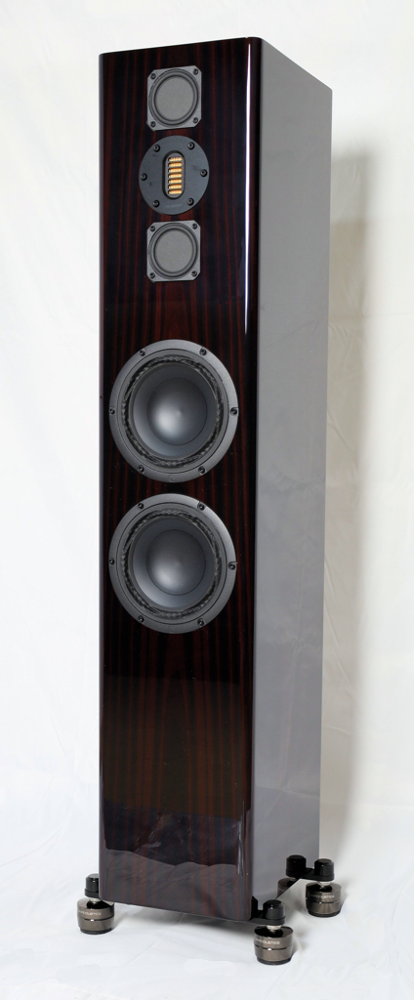
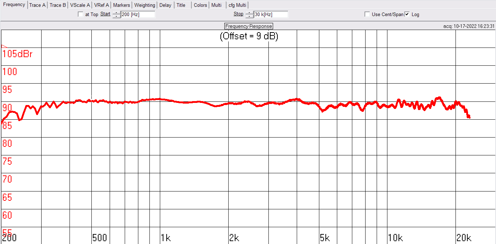
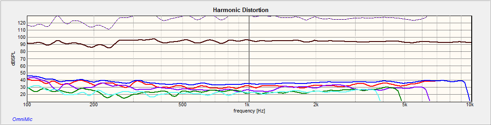
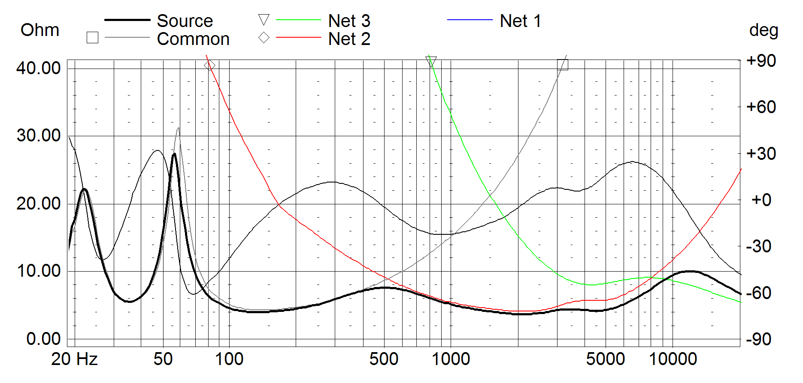
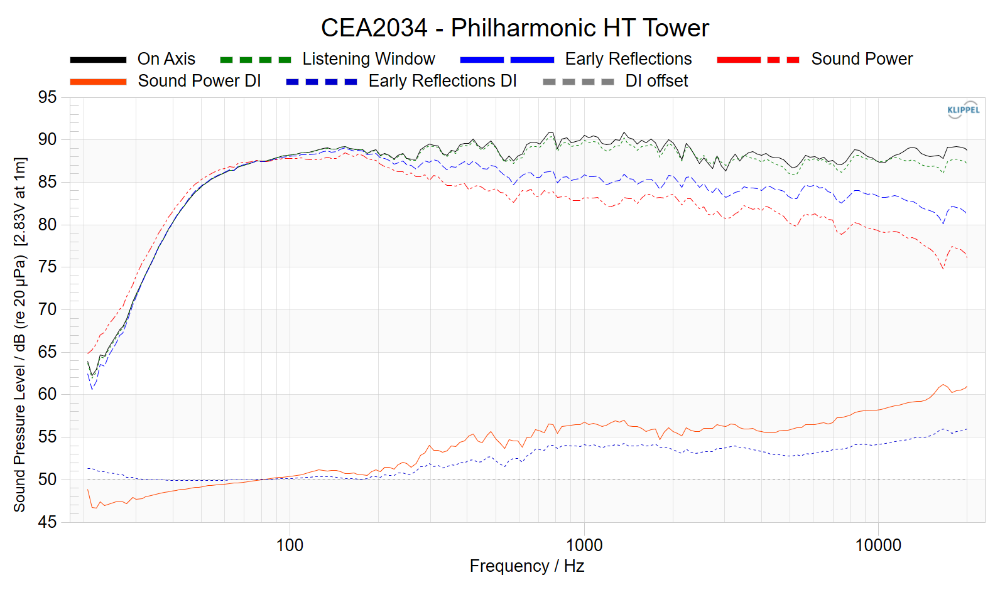
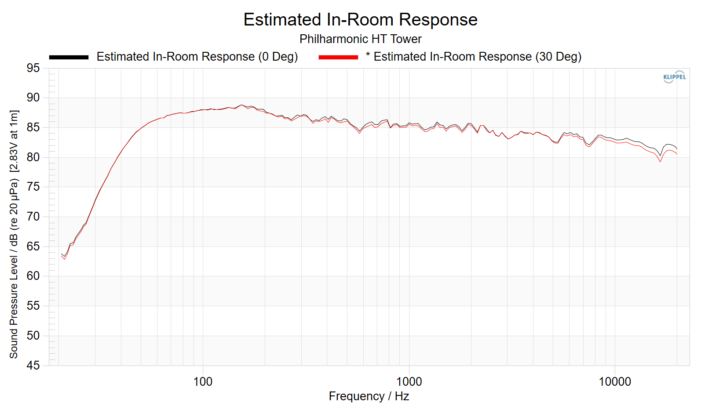
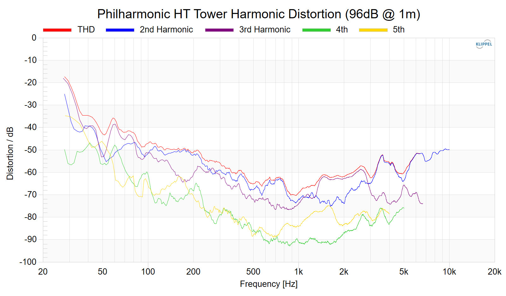
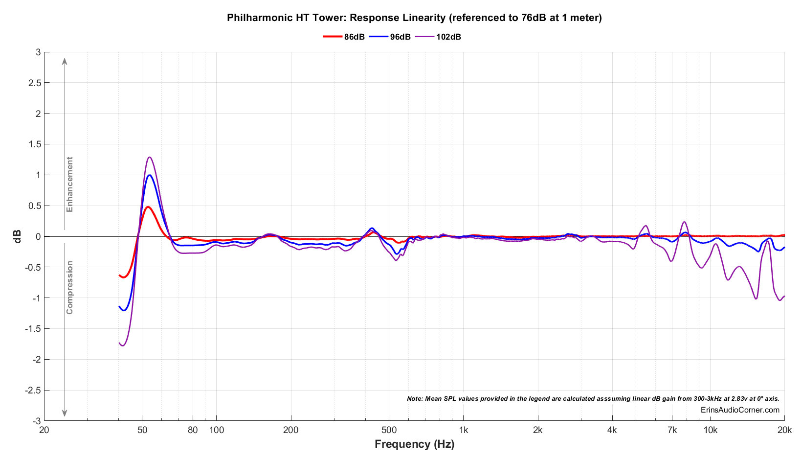
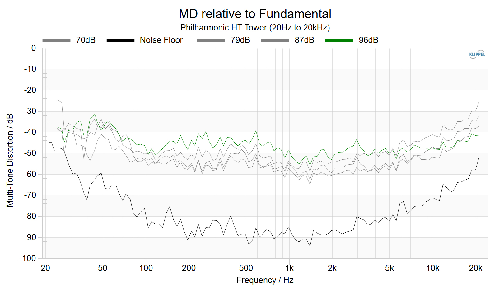

The BMR H T Tower
We are pleased to announce the arrival of our first speaker specifically engineered for state-of-the-art home theater reproduction, the BMR HT Tower, which has received a Product of the Year Award from Audioholics.

Our goal was to offer a speaker with the accuracy of the BMR Tower and Monitor, but with the increased headroom and sensitivity needed to meet the demanding playback requirements encountered in a serious home theater installation. Purifi woofers were the obvious (though very expensive) choice for no-compromise distortion and power handling performance. A new and more robust Balanced Mode Radiator is used in an MTM configuration with a broad-dispersion premium AMT high frequency driver from the German company Mundorf. All of these are housed in a compact tower cabinet that comes standard in the same ebony finish used by a manufacturer of $18,000/pair HT speakers. A satin natural walnut finish is also available. Here is a video of the walnut option: https://www.youtube.com/watch?v=P8FiYNp5N6c.The new BMR HT is capable of 105 dB playback levels at one meter. Distortion at 95 dB (one meter) does not exceed .3% from 250 Hz to 10 kHz. Sensitivity is rated very conservatively at 90 dB. This means that the HT tower will require about half the power needed to drive the BMR tower to the same output level. Since the HT will almost always be paired with a subwoofer in home theater applications, the woofers have been tuned for maximum headroom rather than maximum extension. Still, the HT is flat in-room to 38Hz, and has useful output at 32 Hz.
James Larson of Audioholics has just published a comprehensive review of the HT towers complete with detailed measurements. James sums up his review as follows:
|
“
The sound quality is impeccable, much as we have come to expect from Philharmonic Audio. I never heard anything that sounded errant or off in the slightest. The tonality is exceptionally accurate. As I have said about Philharmonic speakers in the past, this is another that is so dead-on accurate that it could be used in mixing and mastering music in a studio setting since it resolves the sound without bias. If you don’t want your sound system to interject its opinion on what the source material should sound like, the BMR HT Towers are a terrific option. ... These speakers certainly deserve high demand, and if more people appreciate the level of engineering that has gone into them, I think Philharmonic will have problems keeping them in stock because they will be selling out so fast. The BMR HT Towers are outstanding loudspeakers!
”
Audioholics Review, June 14, 2023 |
The HT tower in natural walnut is priced at $4,300/pair, an unheard of bargain in a tower speaker using Purifi woofers. The price with premium ebony finish is $4,500/pair. Shipping ranges from $130/pair to $180/pair depending on location. To order, just write Dennis at info@philharmonicaudio.com.
Measurements
(On Axis and Off Axis Horizontally, One Meter Anechoic)
On Axis

Distortion

Impedance and Phase

On Axis Response and Directivity





Specifications
| Cabinet | Mirror Ebony or Satin Walnut |
| Tweeter | Mundorf AMTU60W1.1-C Air Motion |
| Midrange | TEBM54C30-8 2.5" Balanced Mode Radiator |
| Woofer | Purifi 6.5" OEM |
| Frequency Response | 38 Hz - 20kHz (+ 1.5 / - 3db) Anechoic |
| Sensitivity | 90 dB (2.83v/1M) |
| Box Alignment | Mass Loaded Transmission Line |
| Dimensions | 42.3" H x 8.5" W x 11" D |
| Weight | 55 lbs |
| Impedance | 4 Ohms (4 Ohms minimum, 10 Ohms Maximum |
| Crossover | Linkwitz-Riley 2nd Order Acoustic at 700 Hz, Linkwitz-Riley 4th Order Acoustic at 3,800 Hz |